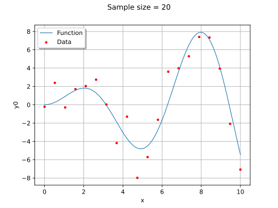
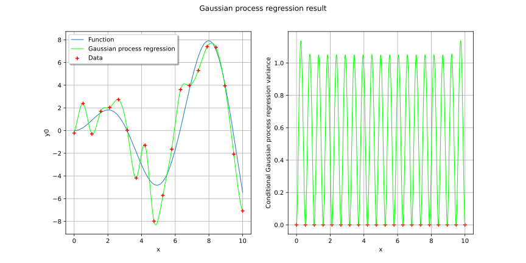
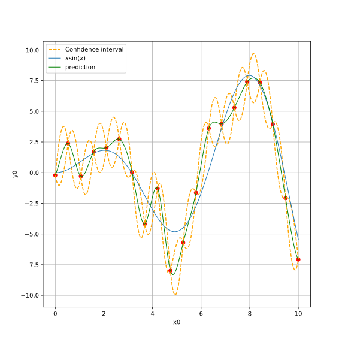
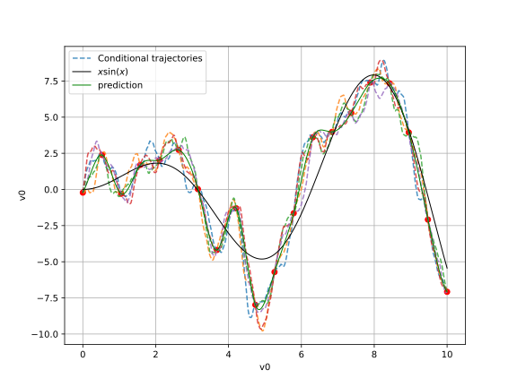
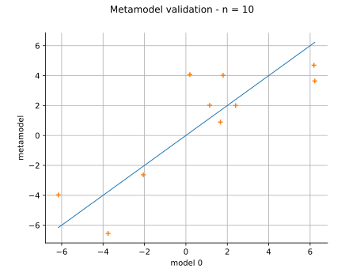
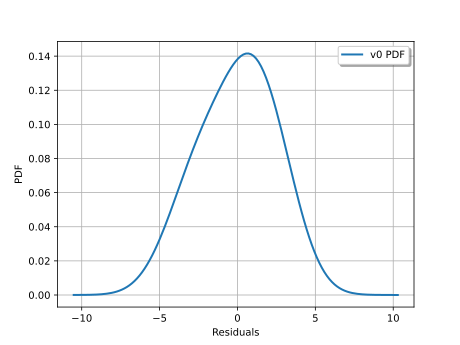

Note
Go to the end to download the full example code.
Advanced Gaussian process regression¶
In this example we will build a metamodel using Gaussian process regression (refer to
Gaussian process regression) of the ![x\sin(x)]() function.
function.
We will choose the number of learning points, the basis and the covariance model.
import openturns as ot
import openturns.viewer as otv
import numpy as np
import matplotlib.pyplot as plt
Generate design of experiments¶
We create training samples from the function . We can change their number and distribution in the ![[0; 10]]() range.
If the with_error boolean is True, then the data is computed by adding a Gaussian noise to the function values.
range.
If the with_error boolean is True, then the data is computed by adding a Gaussian noise to the function values.
dim = 1
xmin = 0
xmax = 10
n_pt = 20 # number of initial points
with_error = True # whether to use generation with error
ref_func_with_error = ot.SymbolicFunction(["x", "eps"], ["x * sin(x) + eps"])
ref_func = ot.ParametricFunction(ref_func_with_error, [1], [0.0])
x = np.vstack(np.linspace(xmin, xmax, n_pt))
ot.RandomGenerator.SetSeed(1235)
eps = ot.Normal(0, 1.5).getSample(n_pt)
X = ot.Sample(n_pt, 2)
X[:, 0] = x
X[:, 1] = eps
if with_error:
y = np.array(ref_func_with_error(X))
else:
y = np.array(ref_func(x))
graph = ref_func.draw(xmin, xmax, 200)
cloud = ot.Cloud(x, y)
cloud.setColor("red")
cloud.setPointStyle("bullet")
graph.add(cloud)
graph.setLegends(["Function", "Data"])
graph.setLegendPosition("upper left")
graph.setTitle("Sample size = %d" % (n_pt))
view = otv.View(graph)

Create the Gaussian process regression algorithm¶
# 1. Basis
ot.ResourceMap.SetAsBool("GaussianProcessFitter-UseAnalyticalAmplitudeEstimate", True)
basis = ot.ConstantBasisFactory(dim).build()
print(basis)
# 2. Covariance model
cov = ot.MaternModel([1.0], [2.5], 1.5)
print(cov)
# 3. Gaussian process fitter algorithm
algogpfitter = ot.GaussianProcessFitter(x, y, cov, basis)
# 4. Optimization
# algogpr.setOptimizationAlgorithm(ot.NLopt('GN_DIRECT'))
lhsExperiment = ot.LHSExperiment(ot.Uniform(1e-1, 1e2), 50)
algogpfitter.setOptimizationAlgorithm(ot.MultiStart(ot.TNC(), lhsExperiment.generate()))
# 5. Run the algorithm
algogpfitter.run()
gpfitterResult = algogpfitter.getResult()
# 6. Gaussian process regression algorithm
algogpr = ot.GaussianProcessRegression(gpfitterResult)
# 7. Run the algorithm
algogpr.run()
Basis( [[x0]->[1]] )
MaternModel(scale=[1], amplitude=[2.5], nu=1.5)
Results¶
Get some results
gprResult = algogpr.getResult()
print("Optimal scale= {}".format(gprResult.getCovarianceModel().getScale()))
print("Optimal amplitude = {}".format(gprResult.getCovarianceModel().getAmplitude()))
print("Optimal trend coefficients = {}".format(gprResult.getTrendCoefficients()))
Optimal scale= [0.818671]
Optimal amplitude = [4.51224]
Optimal trend coefficients = [-0.115697]
Get the metamodel
gprMeta = gprResult.getMetaModel()
n_pts_plot = 1000
x_plot = np.vstack(np.linspace(xmin, xmax, n_pts_plot))
fig, [ax1, ax2] = plt.subplots(1, 2, figsize=(12, 6))
# On the left, the function
graph = ref_func.draw(xmin, xmax, n_pts_plot)
graph.setLegends(["Function"])
graphGpr = gprMeta.draw(xmin, xmax, n_pts_plot)
graphGpr.setColors(["green"])
graphGpr.setLegends(["Gaussian process regression"])
graph.add(graphGpr)
cloud = ot.Cloud(x, y)
cloud.setColor("red")
cloud.setLegend("Data")
graph.add(cloud)
graph.setLegendPosition("upper left")
otv.View(graph, axes=[ax1])
# On the right, the conditional Gaussian process regression variance
graph = ot.Graph("", "x", "Conditional Gaussian process regression variance")
# Sample for the data
sample = ot.Sample(n_pt, 2)
sample[:, 0] = x
cloud = ot.Cloud(sample)
cloud.setColor("red")
graph.add(cloud)
# Sample for the variance
sample = ot.Sample(n_pts_plot, 2)
sample[:, 0] = x_plot
variance = ot.GaussianProcessConditionalCovariance(
gprResult
).getConditionalMarginalVariance(x_plot)
sample[:, 1] = variance
curve = ot.Curve(sample)
curve.setColor("green")
graph.add(curve)
otv.View(graph, axes=[ax2])
fig.suptitle("Gaussian process regression result")

Text(0.5, 0.98, 'Gaussian process regression result')
Display the confidence interval¶
level = 0.95
quantile = ot.Normal().computeQuantile((1 - level) / 2)[0]
borne_sup = gprMeta(x_plot) + quantile * np.sqrt(variance)
borne_inf = gprMeta(x_plot) - quantile * np.sqrt(variance)
fig, ax = plt.subplots(figsize=(8, 8))
ax.plot(x, y, ("ro"))
ax.plot(x_plot, borne_sup, "--", color="orange", label="Confidence interval")
ax.plot(x_plot, borne_inf, "--", color="orange")
graph_ref_func = ref_func.draw(xmin, xmax, n_pts_plot)
graph_gprMeta = gprMeta.draw(xmin, xmax, n_pts_plot)
for graph in [graph_ref_func, graph_gprMeta]:
graph.setTitle("")
otv.View(graph_ref_func, axes=[ax], plot_kw={"label": r"$x\sin(x)$"})
otv.View(
graph_gprMeta,
plot_kw={"color": "green", "label": "prediction"},
axes=[ax],
)
legend = ax.legend()
ax.autoscale()

Generate conditional trajectories¶
Support for trajectories
grid = ot.IntervalMesher([500]).build(ot.Interval(0, 10))
Conditional Gaussian process
krv = ot.ConditionedGaussianProcess(gprResult, grid)
krv_sample = krv.getSample(5)
values = grid.getVertices()
x_plot = grid.getVertices()
fig, ax = plt.subplots(figsize=(8, 6))
ax.plot(x, y, ("ro"))
for i in range(krv_sample.getSize()):
if i == 0:
ax.plot(
values,
krv_sample[i].asPoint(),
"--",
alpha=0.8,
label="Conditional trajectories",
)
else:
ax.plot(values, krv_sample[i].asPoint(), "--", alpha=0.8)
otv.View(
graph_ref_func,
axes=[ax],
plot_kw={"color": "black", "label": r"$x\sin(x)$"},
)
otv.View(
graph_gprMeta,
axes=[ax],
plot_kw={"color": "green", "label": "prediction"},
)
legend = ax.legend()
ax.autoscale()

Validation¶
n_valid = 10
x_valid = ot.Uniform(xmin, xmax).getSample(n_valid)
X_valid = ot.Sample(x_valid)
if with_error:
X_valid.stack(ot.Normal(0.0, 1.5).getSample(n_valid))
y_valid = np.array(ref_func_with_error(X_valid))
else:
y_valid = np.array(ref_func(X_valid))
metamodelPredictions = gprMeta(x_valid)
validation = ot.MetaModelValidation(y_valid, metamodelPredictions)
validation.computeR2Score()
graph = validation.drawValidation()
view = otv.View(graph)

graph = validation.getResidualDistribution().drawPDF()
graph.setXTitle("Residuals")
view = otv.View(graph)

Nugget effect¶
Let us try again, but this time we optimize the nugget effect.
cov.activateNuggetFactor(True)
We have to run the optimization algorithm again.
algogpfitter = ot.GaussianProcessFitter(x, y, cov, basis)
algogpfitter.setOptimizationAlgorithm(ot.NLopt("GN_DIRECT"))
algogpfitter.run()
algogpr_nugget = ot.GaussianProcessRegression(algogpfitter.getResult())
algogpr_nugget.run()
We get the results and the metamodel.
gprResult_nugget = algogpr_nugget.getResult()
print("Optimal scale= {}".format(gprResult_nugget.getCovarianceModel().getScale()))
print(
"Optimal amplitude = {}".format(
gprResult_nugget.getCovarianceModel().getAmplitude()
)
)
print("Optimal trend coefficients = {}".format(gprResult_nugget.getTrendCoefficients()))
Optimal scale= [1.15712]
Optimal amplitude = [4.67517]
Optimal trend coefficients = [-0.350133]
gprMeta_nugget = gprResult_nugget.getMetaModel()
gpr_conditional_covariance = ot.GaussianProcessConditionalCovariance(gprResult_nugget)
variance = gpr_conditional_covariance.getConditionalMarginalVariance(x_plot)
Plot the confidence interval again. Note that this time, it always contains the true value of the function.
# sphinx_gallery_thumbnail_number = 7
borne_sup_nugget = gprMeta_nugget(x_plot) + quantile * np.sqrt(variance)
borne_inf_nugget = gprMeta_nugget(x_plot) - quantile * np.sqrt(variance)
fig, ax = plt.subplots(figsize=(8, 8))
ax.plot(x, y, ("ro"))
ax.plot(
x_plot,
borne_sup_nugget,
"--",
color="orange",
label="Confidence interval with nugget",
)
ax.plot(x_plot, borne_inf_nugget, "--", color="orange")
graph_gprMeta_nugget = gprMeta_nugget.draw(xmin, xmax, n_pts_plot)
graph_gprMeta_nugget.setTitle("")
otv.View(graph_ref_func, axes=[ax], plot_kw={"label": "$x sin(x)$"})
otv.View(
graph_gprMeta_nugget,
plot_kw={"color": "green", "label": "prediction with nugget"},
axes=[ax],
)
otv.View(
graph_gprMeta,
plot_kw={
"color": "green",
"linestyle": "dotted",
"label": "prediction without nugget",
},
axes=[ax],
)
legend = ax.legend()
ax.autoscale()

We validate the model with the nugget effect: its predictivity factor is slightly improved.
validation_nugget = ot.MetaModelValidation(y_valid, gprMeta_nugget(x_valid))
print("R2 score with nugget: ", validation_nugget.computeR2Score())
print("R2 score without nugget: ", validation.computeR2Score())
R2 score with nugget: [0.737924]
R2 score without nugget: [0.692168]
Display all figures
otv.View.ShowAll()